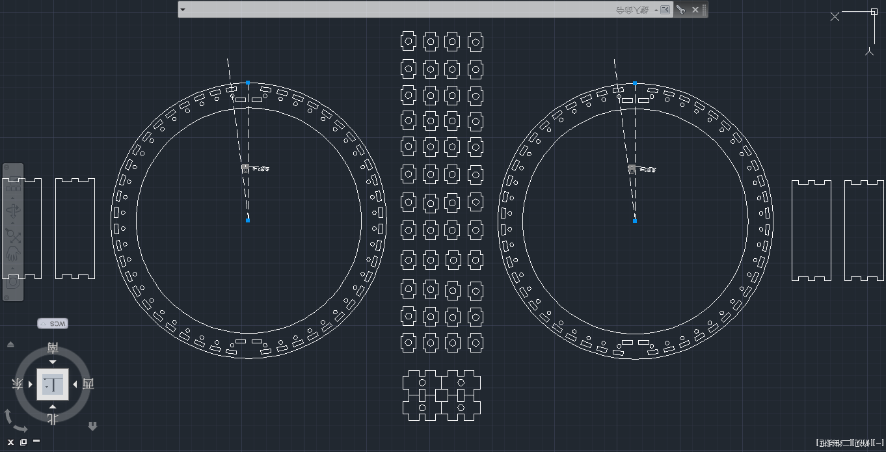
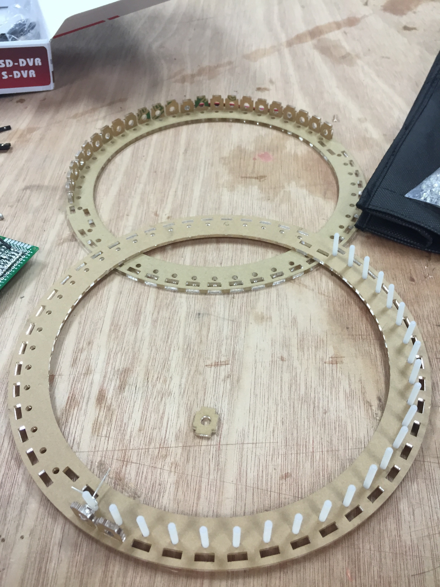
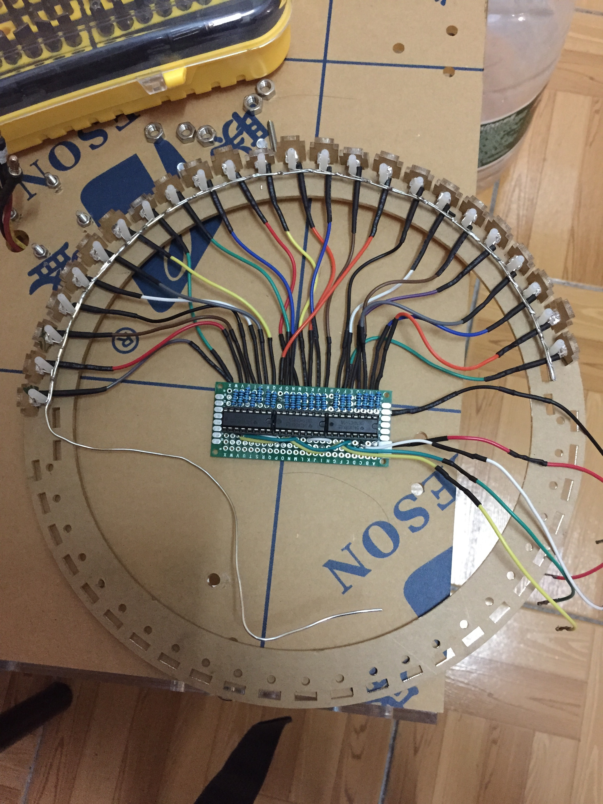
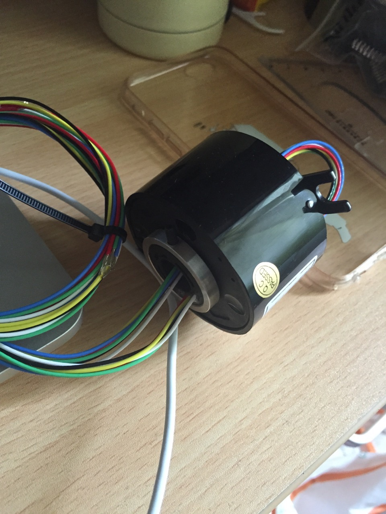
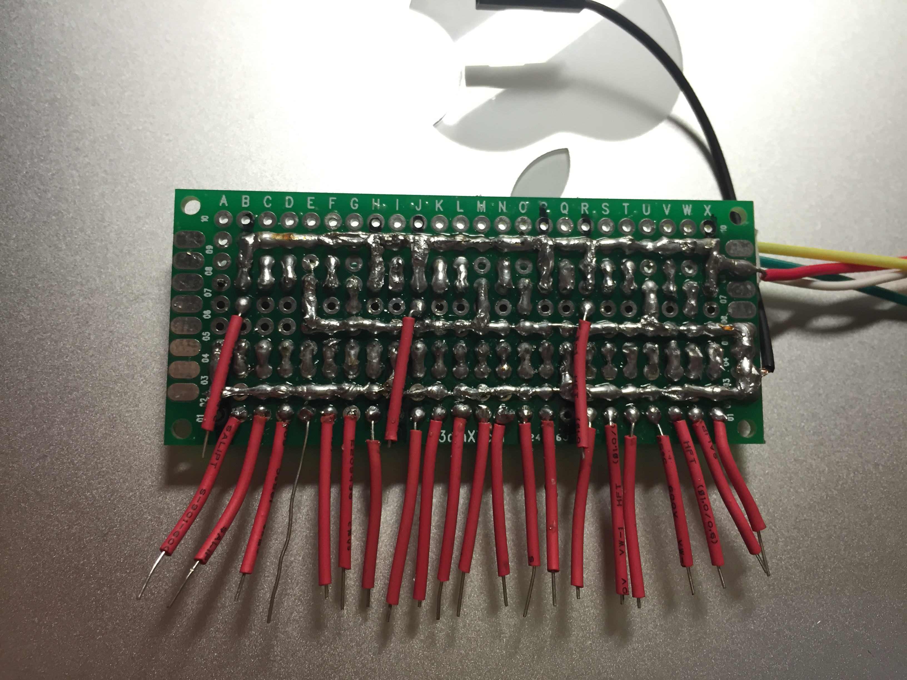
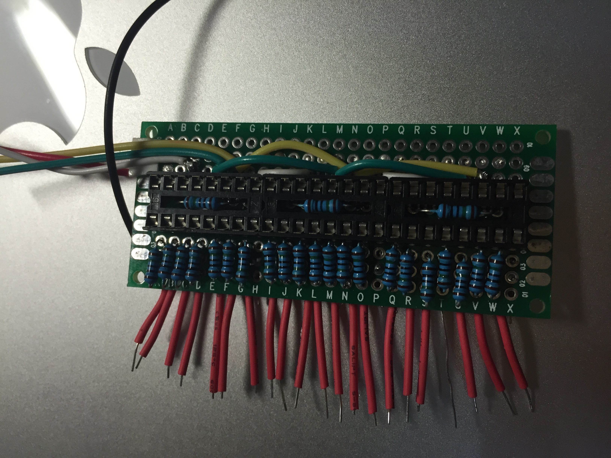

PIC32 Based Presistence of Vision Golbe
Course project of SJTU's VE373 Design of Microprocessor Based Systems. Team of two. Summer 2015.
Works
- Designed and built the mechanical structure of the POV globe, implemented its control algorithm using embedded C
- Displayed a world map and other patterns stored in the microcomputer on the surface of the globee
- Connected the globe with PC via UART to change the pattern displayed on its surface
Mechanical Structure
Laser cut the supporting structure.



Slip Ring
We used a slip ring to saperate the stationary part and the moving components.

Shift Register
We used shift register to reduce the number of ports needed.


Test the shift registers on bread board.
Results
A test video is shown below.
Back